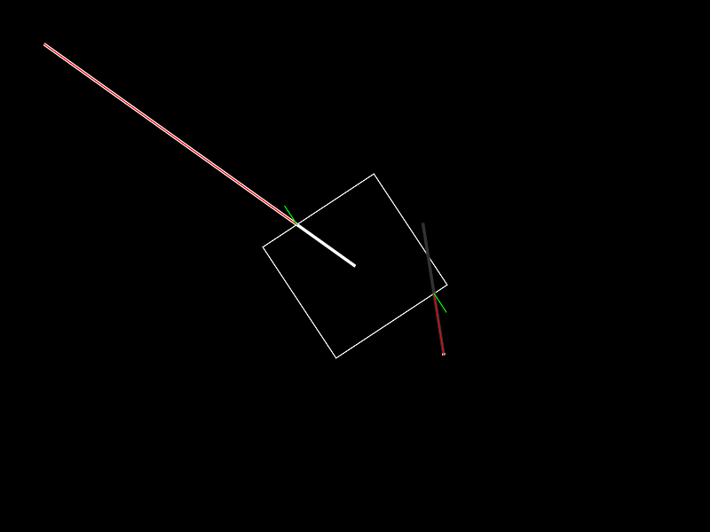

File:raycast example screenshot.png
No higher resolution available.

raycast_example_screenshot.png (800 × 600 pixels, file size: 9 KB, MIME type: image/png)
{kind=link}
A screenshot of a Fixture:rayCast example for LÖVE 0.8.0.
function love.load() -- Setting this to 1 to avoid all current scaling bugs. love.physics.setMeter(1) World = love.physics.newWorld() Box = {} Box.Body = love.physics.newBody(World, 400, 300, "dynamic") Box.Shape = love.physics.newRectangleShape(150, 150) Box.Fixture = love.physics.newFixture(Box.Body, Box.Shape) -- Giving the box a gentle spin. Box.Body:setAngularVelocity(0.5) Ray1 = { point1 = {}, point2 = {}, } Ray1.point1.x, Ray1.point1.y = 50, 50 Ray1.point2.x, Ray1.point2.y = 400, 300 Ray1.scale = 1 Ray2 = { point1 = {}, point2 = {}, } Ray2.point1.x, Ray2.point1.y = 500, 400 Ray2.point2.x, Ray2.point2.y = Ray2.point1.x + math.cos(math.pi*1.45), Ray2.point1.y + math.sin(math.pi*1.45) Ray2.scale = 150 end function love.update(dt) World:update(dt) end function love.draw() -- Drawing the box. love.graphics.setColor(255, 255, 255) love.graphics.polygon("line", Box.Body:getWorldPoints( Box.Shape:getPoints() )) -- Drawing the input lines of the rays and the reach of ray 2 in gray. love.graphics.setLineWidth(3) love.graphics.setColor(50, 50, 50) love.graphics.line(Ray2.point1.x, Ray2.point1.y, Ray2.point1.x + (Ray2.point2.x - Ray2.point1.x) * Ray2.scale, Ray2.point1.y + (Ray2.point2.y - Ray2.point1.y) * Ray2.scale) love.graphics.setColor(255, 255, 255) love.graphics.line(Ray1.point1.x, Ray1.point1.y, Ray1.point2.x, Ray1.point2.y) love.graphics.line(Ray2.point1.x, Ray2.point1.y, Ray2.point2.x, Ray2.point2.y) love.graphics.setLineWidth(1) -- Remember that the ray cast can return nil if it hits nothing. local r1nx, r1ny, r1f = Box.Fixture:rayCast(Ray1.point1.x, Ray1.point1.y, Ray1.point2.x, Ray1.point2.y, Ray1.scale) local r2nx, r2ny, r2f = Box.Fixture:rayCast(Ray2.point1.x, Ray2.point1.y, Ray2.point2.x, Ray2.point2.y, Ray2.scale) if r1nx then -- Calculating the world position where the ray hit. local r1HitX = Ray1.point1.x + (Ray1.point2.x - Ray1.point1.x) * r1f local r1HitY = Ray1.point1.y + (Ray1.point2.y - Ray1.point1.y) * r1f -- Drawing the ray from the starting point to the position on the shape. love.graphics.setColor(255, 0, 0) love.graphics.line(Ray1.point1.x, Ray1.point1.y, r1HitX, r1HitY) -- We also get the surface normal of the edge the ray hit. Here drawn in green love.graphics.setColor(0, 255, 0) love.graphics.line(r1HitX, r1HitY, r1HitX + r1nx * 25, r1HitY + r1ny * 25) end if r2nx then -- Calculating the world position where the ray hit. local r2HitX = Ray2.point1.x + (Ray2.point2.x - Ray2.point1.x) * r2f local r2HitY = Ray2.point1.y + (Ray2.point2.y - Ray2.point1.y) * r2f -- Drawing the ray from the starting point to the position on the shape. love.graphics.setColor(255, 0, 0) love.graphics.line(Ray2.point1.x, Ray2.point1.y, r2HitX, r2HitY) -- We also get the surface normal of the edge the ray hit. Here drawn in green love.graphics.setColor(0, 255, 0) love.graphics.line(r2HitX, r2HitY, r2HitX + r2nx * 25, r2HitY + r2ny * 25) end end
File history
Click on a date/time to view the file as it appeared at that time.
| Date/Time | Thumbnail | Dimensions | User | Comment |
|---|
- You cannot overwrite this file.
File usage
The following 2 pages link to this file: